N97000512
Hand Gesture
Recognition
// quanto conta, davvero, imparare dai dati?
riconoscimento da
webcam in tempo reale
Tre modi di riconoscere
lo stesso gesto
Lo stesso problema viene affrontato con tre filosofie diverse, che ripercorrono l'evoluzione storica della visione artificiale: dalle regole scritte a mano, alle feature progettate dall'uomo ma classificate da una rete, fino alle feature apprese direttamente dai pixel.
Euristico
Regole geometriche esplicite: misuro distanze e angoli della mano e decido con una serie di condizioni. Nessun apprendimento.
Rete su keypoint
Una piccola rete riceve la geometria della mano (feature progettate a mano) e impara da sola le regole di decisione.
CNN
Una rete convoluzionale parte dai pixel grezzi e impara sia cosa guardare sia come classificarlo.
Il Task
Una posa → un'etichetta
Dato un fotogramma con una mano, il sistema deve assegnarlo a una di 15 classi — saluti, conteggi, simboli — più la classe NO GESTURE. Il vincolo che guida ogni scelta progettuale è uno solo: funzionare in tempo reale sul flusso di una webcam.
Dataset HaGRID · suddiviso in train / validation / test con proporzione 80 / 10 / 10.
I quindici gesti da riconoscere
- ☝️POINTING UP — solo l'indice alzato
- ✌︎TWO — indice e medio uniti
- 🤟THREE — indice, medio e anulare
- 🖖FOUR — quattro dita, pollice giù
- ✌️VICTORY — indice e medio divaricati
- 👍LIKE — pollice alzato in su
- 👎DISLIKE — pollice rivolto in giù
- 👌OK — pollice e indice a cerchio
- 🤙CALL — pollice e mignolo distesi
- 🤘ROCK — indice e mignolo distesi
- ✊FIST — pugno chiuso
- 🖐️OPEN PALM — mano aperta, dita unite
- ✋STOP — mano aperta, dita larghe
- 🤫MUTE — pizzico pollice-indice
- ∅NO GESTURE — nessun gesto valido
Ogni gesto è una posa statica della mano: la sfida è distinguerli in tempo reale, anche quando le firme di dita si somigliano.
La mano diventa geometria
Un rilevatore di mani estrae da ogni immagine 21 punti caratteristici con le loro coordinate, più gli angoli di piegamento delle dita: in tutto un vettore di 73 valori che descrive la posa, non più i pixel.
| punto | x | y | z |
|---|---|---|---|
| polso | 0.00 | 0.00 | 0.00 |
| punta pollice | −0.24 | −0.50 | −0.04 |
| punta indice | −0.49 | −0.35 | −0.02 |
→ 21 punti × 3 coord. + 10 angoli. La CNN invece riceve l'immagine intera.
Formazione dell'immagineIl sensore cattura un solo colore per pixel: il colore pieno è poi ricostruito per interpolazione (demosaicing). La profondità è solo relativa → mano trattata come quasi-piatta (weak perspective), ipotesi valida vista la distanza tipica dalla camera.
Dal dataset ai tre classificatori
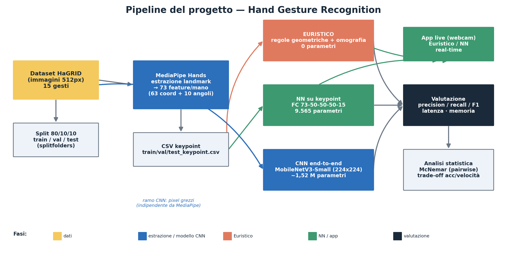
Euristico e rete su keypoint condividono lo stesso input geometrico; la CNN lavora sui pixel, su un ramo del tutto indipendente.
Le tre
implementazioni
Ogni dito ha uno stato
L'idea è semplice e completamente trasparente: per ogni dito decido se è disteso, piegato oppure incrociato, misurando quanto la punta è lontana dal centro del palmo, normalizzata sulla dimensione della mano. Cinque dita danno una "firma" di cinque stati che identifica il gesto.
È visione artificiale classica al 100%: nessun parametro, nessun addestramento, decisioni leggibili una per una.
Dove le regole
diventano fragili
La firma delle cinque dita non sempre basta: gesti diversi possono avere le stesse dita distese e si distinguono solo da distanze relative — ad esempio quanto sono divaricate indice e medio, o quanto è chiuso il "pizzico" tra pollice e indice. Ogni distinzione è una soglia fissa, scelta a mano.
Il caso difficile: il pollice
Capire se il pollice è incrociato sul palmo è ambiguo: dipende fortemente dall'angolo di ripresa. Per gestirlo, la mano viene prima "raddrizzata" con una correzione prospettica, riportandola a una vista frontale standard prima di misurare.
Il prezzo da pagare
Le soglie fisse funzionano sul caso ideale ma si rompono con rotazioni, prospettive insolite o mani diverse da quelle previste. È un sistema rigido: preciso quando le ipotesi reggono, cieco quando saltano.
Trasformata di Hough & OmografiaI punti di riferimento si individuano cercando forme circolari note (Trasformata di Hough); da questi si stima la trasformazione prospettica tra due piani che riporta la mano in vista canonica — lo stesso principio della calibrazione geometrica di una camera.
Le regole, esplicite
| Gesto | Firma dita · P I M A Mi | Soglia / condizione chiave |
|---|---|---|
| FIST ✊ | ●●●●● | tutte e cinque le dita piegate |
| POINTING UP ☝️ | ●●●●● | solo l'indice disteso |
| TWO ✌︎ | ●●●●● | div. indice↔medio / palmo ≤ 0.6 |
| VICTORY ✌️ | ●●●●● | div. indice↔medio / palmo > 0.6 |
| THREE 🤟 | ●●●●● | indice + medio + anulare distesi |
| FOUR 🖖 | ●●●●● | quattro dita distese, pollice piegato |
| OPEN PALM 🖐️ | ●●●●● | apertura indice↔mignolo / palmo ≤ 1.3 |
| STOP ✋ | ●●●●● | apertura indice↔mignolo / palmo > 1.3 |
| LIKE 👍 | ●●●●● | punta pollice sopra la nocca (y₄ < y₂) |
| DISLIKE 👎 | ●●●●● | punta pollice sotto la nocca (y₄ ≥ y₂) |
| CALL 🤙 | ●●●●● | pollice + mignolo distesi, resto piegato |
| ROCK 🤘 | ●●●●● | indice + mignolo distesi, resto piegato |
| OK 👌 | pizzico | pizzico pollice↔indice / palmo < 0.35 · medio+anulare distesi |
| MUTE 🤫 | pizzico | pizzico pollice↔indice / palmo < 0.35 · medio/anulare piegati |
| NO GESTURE | — | nessuna regola soddisfatta (fallback) |
Firma: ● disteso · ● piegato — dito disteso se distanza punta→palmo (normalizzata) > 0.6 · pollice incrociato se l'angolo in vista raddrizzata < 0.8. Numeri tarati a mano: leggibili, ma ciechi appena cambia prospettiva.
Geometria → rete → gesto
Il vettore di 73 numeri entra in una rete densa con tre strati nascosti da 50 neuroni e un'uscita su 15 classi. Non vede pixel: ragiona solo sulla forma della mano. Proprio perché l'input è già compatto e informativo, la rete può restare minuscola.
Addestrata finché la rete migliora sui dati di validazione, fermandosi quando smette di farlo (per non sovra-adattarsi) e tenendo i pesi migliori.
Feature che non si lasciano ingannare
La forza di questo modello è che le feature sono costruite per essere invarianti alle cose che non contano: dove si trova la mano, quanto è grande, come è ruotata. La rete riceve quindi una descrizione stabile dello stesso gesto, da qualunque angolazione.
Coordinate relative al polso
Misurando tutto rispetto al polso e normalizzando sulla dimensione della mano, il gesto resta identico se la mano si sposta nell'inquadratura o è più vicina/lontana dalla camera.
Angoli tra le articolazioni
Gli angoli di piegamento delle dita non cambiano se ruoto la mano: catturano la posa intrinseca, indipendente dall'orientamento.
Descrittore SIFTStessa filosofia dei descrittori classici della visione: normalizzare posizione, scala e orientamento per una rappresentazione robusta. Qui però le feature le progetta l'uomo sulla fisica della mano, invece di estrarle automaticamente dall'immagine.
Una rete già esperta,
ri-specializzata
La CNN lavora direttamente sull'immagine e impara da sé quali dettagli osservare. Si parte da una rete già addestrata su milioni di immagini e la si ri-addestra interamente sul nostro problema (fine-tuning).
Perché non da zero? Addestrare una rete profonda da capo richiederebbe enormi quantità di dati e tempo di calcolo. Riusare conoscenze visive di base già pronte — bordi, texture, forme — taglia drasticamente il costo di training e migliora l'accuratezza.
In breve
MobileNetV3-Small — architettura leggera pensata per dispositivi mobili.
Ingresso a 224×224 pixel · ottimizzazione con riduzione automatica del passo di apprendimento e arresto anticipato.
Cosa imparano i filtri
Per non memorizzare le foto ma generalizzare, durante l'addestramento ogni immagine viene perturbata: ribaltata, ruotata di poco, traslata, con colori e luminosità alterati. La rete impara così a riconoscere il gesto in condizioni sempre diverse.
Edge detection & Scale-spaceI primi strati imparano da soli a reagire a bordi e contrasti — ciò che i rilevatori di bordo classici calcolano a mano. Gli strati successivi combinano questi segnali in angoli, poi in parti della mano, infine nel gesto: una gerarchia dal semplice al complesso, equivalente appreso dell'analisi multi-scala classica.
Strati iniziali
bordi, contrasti, texture
Strati intermedi
angoli, curve, parti di dito
Strati profondi
configurazione → gesto
Risultati —
Prestazioni
CNN 94.67% · rete 90.82% · euristico 57.61%
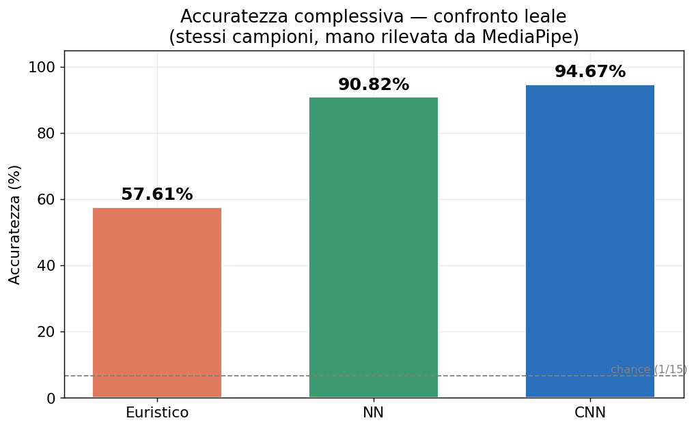
Il salto dalla rete alla CNN è piccolo; quello verso l'euristico è enorme. Imparare dai dati paga — molto.
Quanto è pulita la diagonale
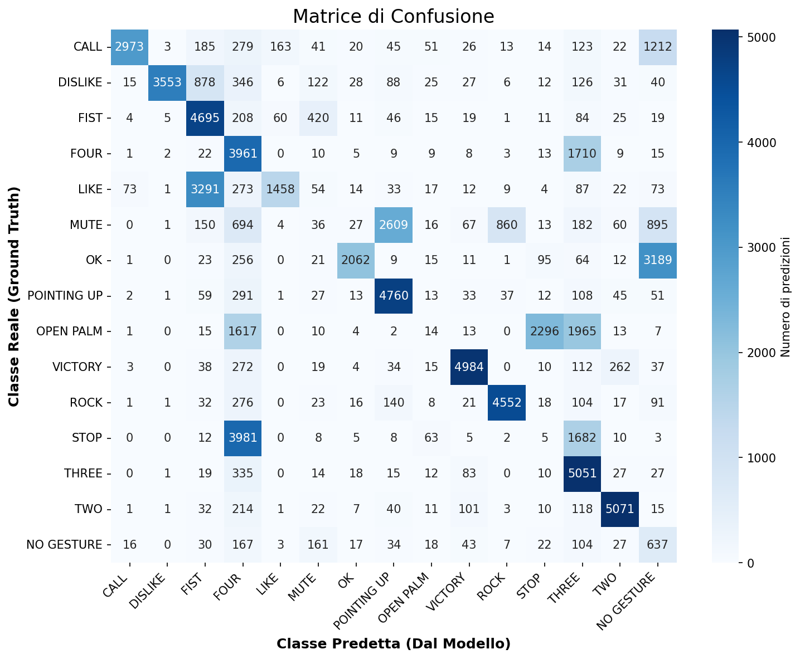
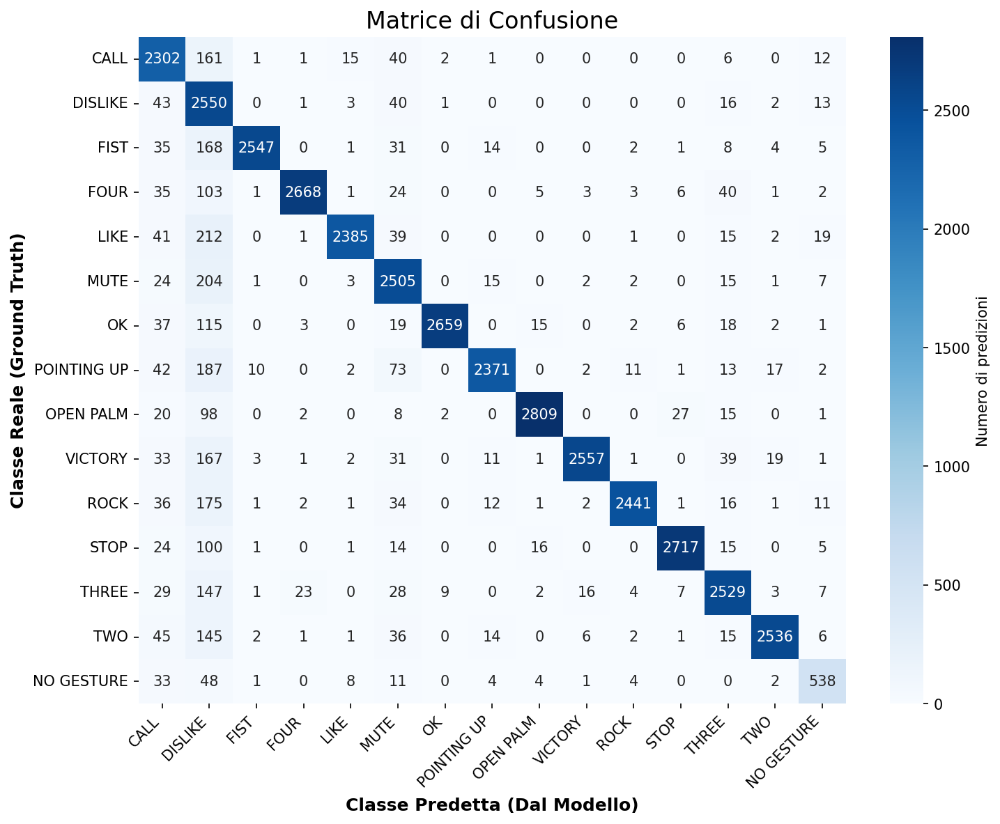
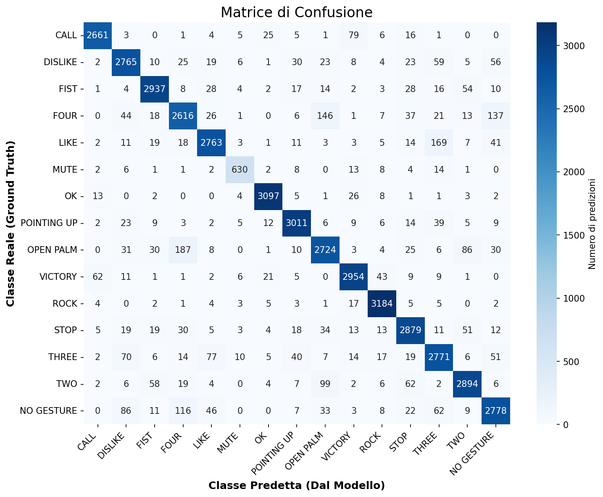
La CNN concentra quasi tutto sulla diagonale; l'euristico disperde interi gesti su classi sbagliate.
Chi vince dove
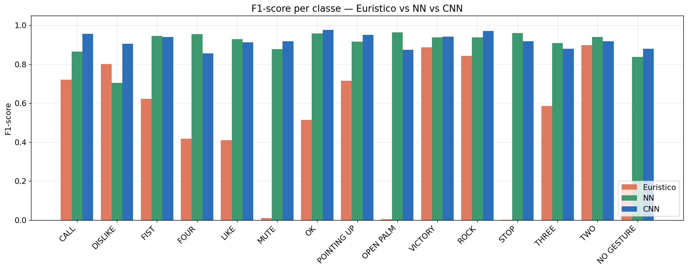
L'euristico crolla su alcuni gesti aperti (mano e stop quasi a zero) ma regge su altri; la CNN è la più equilibrata su tutte le classi.
Convergenza e arresto
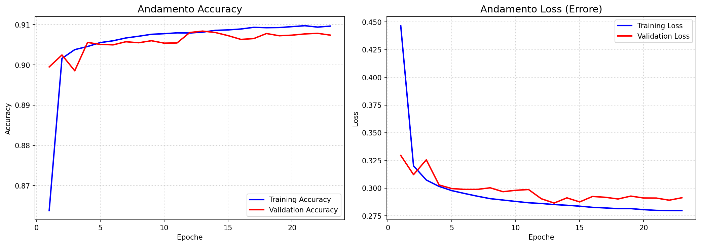
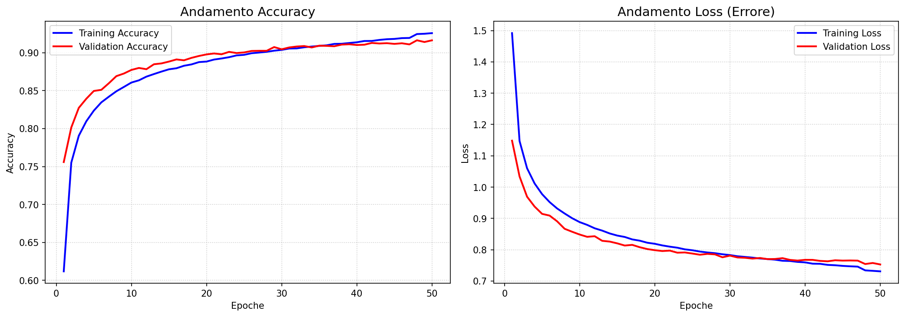
Entrambe si fermano quando la validazione smette di migliorare; nella CNN si vedono i gradini dovuti alla riduzione automatica del passo di apprendimento.
Analisi
statistica
Due passi, non una media
Confrontare accuratezze medie (F-test / ANOVA) qui sarebbe scorretto: i tre modelli vedono gli stessi campioni e l'esito è binario, non una distribuzione continua. Servono test per dati appaiati, applicati in due passi.
① Cochran's Q — i tre insieme
Un unico test su tutti e tre i modelli: esiste almeno una differenza? Generalizza McNemar a più classificatori appaiati. Risponde "sì/no" prima di guardare le coppie.
② McNemar — coppia per coppia
Acclarata la differenza, si individua quali coppie differiscono. Guarda solo i disaccordi: chi indovina quando l'altro sbaglia.
Il verdetto in due passi
① Cochran's Q
I tre modelli non sono equivalenti: almeno uno è diverso. Su 39.765 campioni con mano rilevata.
② Le coppie poi confermano l'ordine: ogni p-value è praticamente nullo → CNN > rete > euristico è solido.
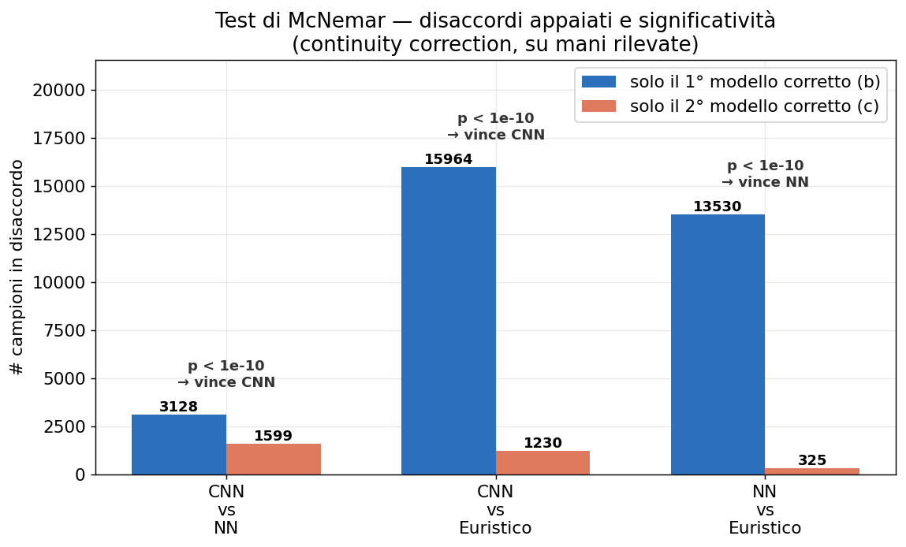
Il miglior compromesso
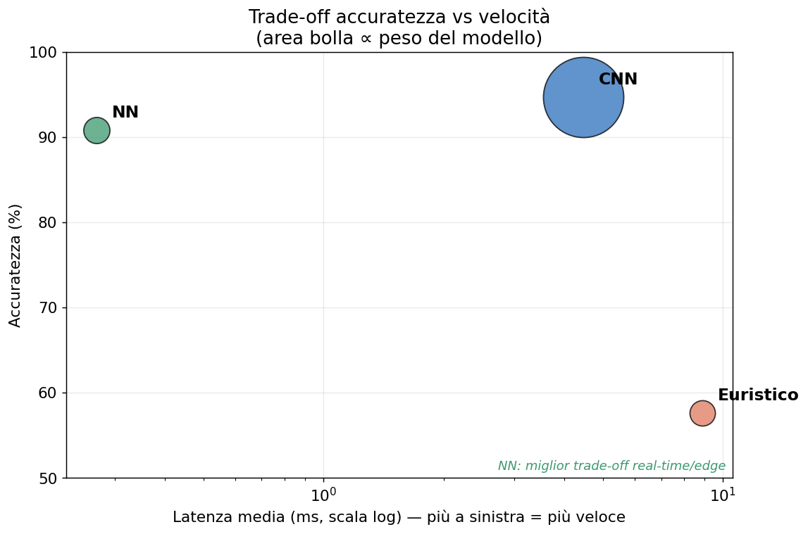
La rete su keypoint sta nell'angolo giusto: quasi accurata come la CNN, ma molto più veloce e leggera — ideale per il tempo reale.
Analisi temporale
e spaziale
Il "senza parametri" è il più lento
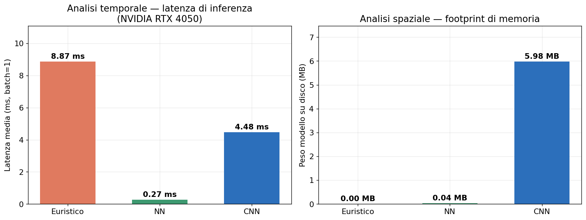
L'euristico (8.87 ms) paga le pesanti operazioni geometriche su CPU; la rete su keypoint (0.27 ms) riduce tutto ad algebra lineare; la CNN (4.48 ms) resta competitiva sfruttando la GPU.
Analisi spaziale
- NN ed Euristico dipendono dai landmark MediaPipe
- Su ~4.443 immagini MediaPipe fallisce (occlusioni, blur, angoli estremi)quei due modelli non possono nemmeno tentare la classificazione.
- La CNN legge i pixel grezzi → le classifica comunquesupport test: CNN 44.207 vs NN 39.764.
- Memoria: Euristico 0 MB · NN 0.04 MB · CNN 5.98 MB
MediaPipe fallisce su immagini degradate (rumore, motion blur). Filtri di smoothing (gaussiano / mediano) come pre-processing potrebbero recuperarle. La CNN è intrinsecamente più robusta perché apprende feature tolleranti al degrado.
Dal vivo
Guardiamoli lavorare
Sintesi
Tre modelli, tre compromessi
| Euristico | Rete su keypoint | CNN | |
|---|---|---|---|
| Paradigma | Regole geometriche | Feature a mano + rete | Feature apprese |
| Parametri | 0 | 9.565 | ~1,5 M |
| Peso | 0 MB | 0.04 MB | 5.98 MB |
| Latenza | 8.87 ms | 0.27 ms | 4.48 ms |
| Accuratezza | 57.6% | 90.8% | 94.7% |
| Dipende dal rilevatore di mani | Sì | Sì | No |
Imparare paga,
ma la geometria resiste
Il passaggio dalle feature progettate a mano a quelle apprese migliora nettamente le prestazioni — ma le feature geometriche restano sorprendentemente competitive ed efficientissime.
Rete su keypoint
Il miglior compromesso per il tempo reale: un ordine di grandezza più veloce e ~150× più leggera della CNN, con accuratezza vicina.
CNN
La più accurata e robusta: unica indipendente dal rilevatore di mani, al prezzo di più memoria e di una GPU.
Euristico
Totalmente interpretabile e a costo zero di training, ma fragile e — a sorpresa — il più lento.
Sviluppi futuri
Recuperare i fallimenti
Filtri di riduzione del rumore prima del rilevatore di mani, per salvare le immagini degradate oggi perse.
CNN più leggera
Compressione e ottimizzazione del modello per il deployment su dispositivi a basso consumo.
Modello ibrido
Usare la veloce rete su keypoint come default e ricadere sulla CNN solo quando il rilevatore di mani fallisce: velocità e robustezza insieme.
Profondità reale
Calibrare la camera per passare da mano quasi-piatta a una stima 3D completa della posa.